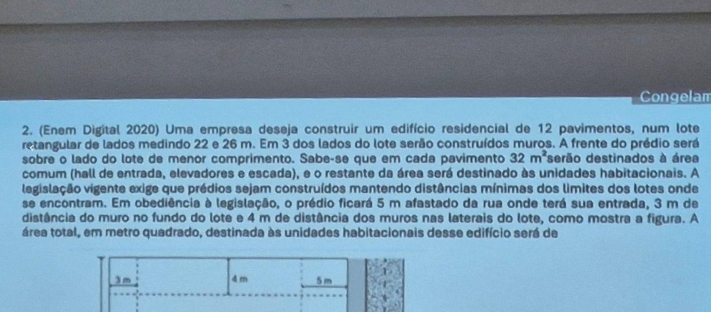
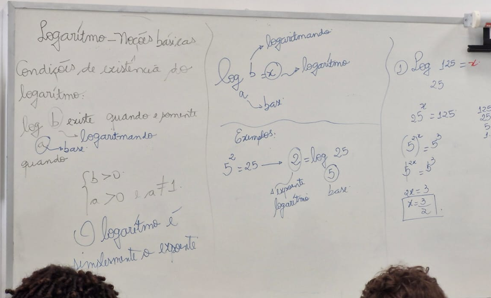
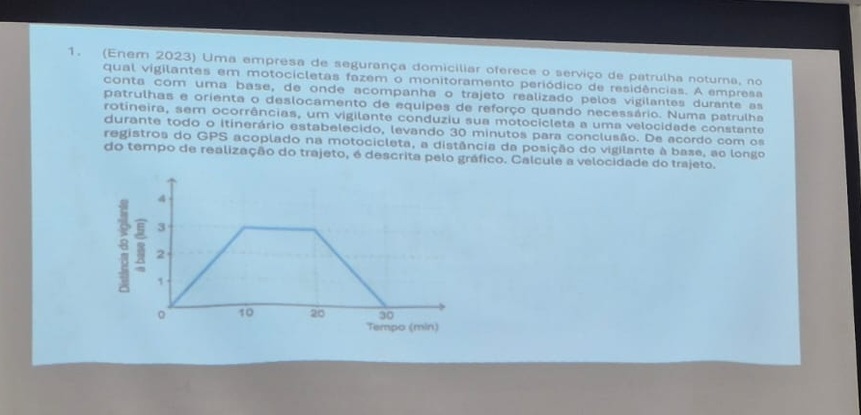

Áreas do Saber • Matemática
Matemática
Registros, anotações de aula e práticas desenvolvidas em Matemática ao longo do Ensino Médio.
Matemática
Desenvolvi o raciocínio lógico e quantitativo por meio da Matemática Financeira (juros, porcentagens e análise de crédito), do estudo de logaritmos e da Estatística descritiva, calculando e interpretando média, moda e mediana. A rotina também incluiu a resolução comentada de exercícios do ENEM, trabalhando interpretação de gráficos, probabilidade e geometria.

